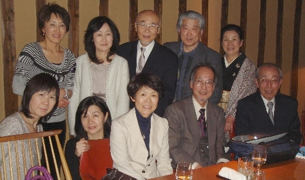

Ｑ１ 同好会立ち上げの苦労は？
苦労がないので苦労話は語れません。(笑)
今年の１月末､岡崎洋先輩（S37卒）が突然「俳句、やらん？」と言い出されたのです。
そしたらいろんな理由（「面白そう」「やってみたかった」「教養を深めたい」［ボケ防止］）の参加希望者が現れあっという間に第１回の会が開かれていました。
集まって盛り上がってたら人の知るところとなり、いつの間にか同好会として認知され、この記事スペースをいただくことになりました。
その後短期間でにくの会は「句会らしきもの」から「歴とした句会」を催す会に劇的進化を遂げています。
ナント！毎回の「句会記」が岡崎先輩によって編纂されています。
Ｑ２ 「新たな縁」づくりの工夫・取組は？
取り組みと呼べるほどの戦略は何もありませんが、興味がありそうな人には「いっぺん見にきていた～～」などとお誘いしています。
Ｑ３ 会員数の推移は？
平成23年2月・第１回参加者（創立メンバー）は10名。
３ヵ月後の現在、登録メンバーは17名です。
Ｑ４ 新たな縁づくりに関する玉翠会サポートヘの期待は？
うーん、予算をつけていただくことしか思い浮かびません。（笑）
とりあえず、困ったことなど何もなく、楽しくやっています。
